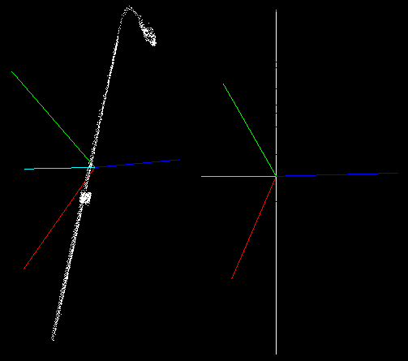

Moment of inertia and eccentricity based descriptors
In this tutorial we will learn how to use the pcl::MomentOfInertiaEstimation class in order to obtain descriptors based on eccentricity and moment of inertia. This class also allows to extract axis aligned and oriented bounding boxes of the cloud. But keep in mind that extracted OBB is not the minimal possible bounding box. Users who only need the OBB or AABB, but not the descriptors, should use respectively computeCentroidAndOBB or getMinMax3D (faster).
Theoretical Primer
The idea of the feature extraction method is as follows. First of all the covariance matrix of the point cloud is calculated and its eigen values and vectors are extracted. You can consider that the resultant eigen vectors are normalized and always form the right-handed coordinate system (major eigen vector represents X-axis and the minor vector represents Z-axis). On the next step the iteration process takes place. On each iteration major eigen vector is rotated. Rotation order is always the same and is performed around the other eigen vectors, this provides the invariance to rotation of the point cloud. Henceforth, we will refer to this rotated major vector as current axis.

For every current axis moment of inertia is calculated. Moreover, current axis is also used for eccentricity calculation. For this reason current vector is treated as normal vector of the plane and the input cloud is projected onto it. After that eccentricity is calculated for the obtained projection.
{kind=link}
Implemented class also provides methods for getting AABB and OBB. Oriented bounding box is computed as AABB along eigen vectors.
The code
First of all you will need the point cloud for this tutorial.
This is the one presented on the screenshots.
Next what you need to do is to create a file moment_of_inertia.cpp in any editor you prefer and copy the following code inside of it:
1#include <vector>
2#include <thread>
3
4#include <pcl/features/moment_of_inertia_estimation.h>
5#include <pcl/io/pcd_io.h>
6#include <pcl/point_types.h>
7#include <pcl/visualization/cloud_viewer.h>
8
9using namespace std::chrono_literals;
10
11int main (int argc, char** argv)
12{
13 if (argc != 2)
14 return (0);
15
16 pcl::PointCloud<pcl::PointXYZ>::Ptr cloud (new pcl::PointCloud<pcl::PointXYZ> ());
17 if (pcl::io::loadPCDFile (argv[1], *cloud) == -1)
18 return (-1);
19
20 pcl::MomentOfInertiaEstimation <pcl::PointXYZ> feature_extractor;
21 feature_extractor.setInputCloud (cloud);
22 feature_extractor.compute ();
23
24 std::vector <float> moment_of_inertia;
25 std::vector <float> eccentricity;
26 pcl::PointXYZ min_point_AABB;
27 pcl::PointXYZ max_point_AABB;
28 pcl::PointXYZ min_point_OBB;
29 pcl::PointXYZ max_point_OBB;
30 pcl::PointXYZ position_OBB;
31 Eigen::Matrix3f rotational_matrix_OBB;
32 float major_value, middle_value, minor_value;
33 Eigen::Vector3f major_vector, middle_vector, minor_vector;
34 Eigen::Vector3f mass_center;
35
36 feature_extractor.getMomentOfInertia (moment_of_inertia);
37 feature_extractor.getEccentricity (eccentricity);
38 feature_extractor.getAABB (min_point_AABB, max_point_AABB);
39 feature_extractor.getOBB (min_point_OBB, max_point_OBB, position_OBB, rotational_matrix_OBB);
40 feature_extractor.getEigenValues (major_value, middle_value, minor_value);
41 feature_extractor.getEigenVectors (major_vector, middle_vector, minor_vector);
42 feature_extractor.getMassCenter (mass_center);
43
44 pcl::visualization::PCLVisualizer::Ptr viewer (new pcl::visualization::PCLVisualizer ("3D Viewer"));
45 viewer->setBackgroundColor (0, 0, 0);
46 viewer->addCoordinateSystem (1.0);
47 viewer->initCameraParameters ();
48 viewer->addPointCloud<pcl::PointXYZ> (cloud, "sample cloud");
49 viewer->addCube (min_point_AABB.x, max_point_AABB.x, min_point_AABB.y, max_point_AABB.y, min_point_AABB.z, max_point_AABB.z, 1.0, 1.0, 0.0, "AABB");
50 viewer->setShapeRenderingProperties(pcl::visualization::PCL_VISUALIZER_REPRESENTATION, pcl::visualization::PCL_VISUALIZER_REPRESENTATION_WIREFRAME, "AABB");
51
52 Eigen::Vector3f position (position_OBB.x, position_OBB.y, position_OBB.z);
53 Eigen::Quaternionf quat (rotational_matrix_OBB);
54 viewer->addCube (position, quat, max_point_OBB.x - min_point_OBB.x, max_point_OBB.y - min_point_OBB.y, max_point_OBB.z - min_point_OBB.z, "OBB");
55 viewer->setShapeRenderingProperties(pcl::visualization::PCL_VISUALIZER_REPRESENTATION, pcl::visualization::PCL_VISUALIZER_REPRESENTATION_WIREFRAME, "OBB");
56
57 pcl::PointXYZ center (mass_center (0), mass_center (1), mass_center (2));
58 pcl::PointXYZ x_axis (major_vector (0) + mass_center (0), major_vector (1) + mass_center (1), major_vector (2) + mass_center (2));
59 pcl::PointXYZ y_axis (middle_vector (0) + mass_center (0), middle_vector (1) + mass_center (1), middle_vector (2) + mass_center (2));
60 pcl::PointXYZ z_axis (minor_vector (0) + mass_center (0), minor_vector (1) + mass_center (1), minor_vector (2) + mass_center (2));
61 viewer->addLine (center, x_axis, 1.0f, 0.0f, 0.0f, "major eigen vector");
62 viewer->addLine (center, y_axis, 0.0f, 1.0f, 0.0f, "middle eigen vector");
63 viewer->addLine (center, z_axis, 0.0f, 0.0f, 1.0f, "minor eigen vector");
64
65 while(!viewer->wasStopped())
66 {
67 viewer->spinOnce (100);
68 std::this_thread::sleep_for(100ms);
69 }
70
71 return (0);
72}
The explanation
Now let’s study out what is the purpose of this code. First few lines will be omitted, as they are obvious.
pcl::PointCloud<pcl::PointXYZ>::Ptr cloud (new pcl::PointCloud<pcl::PointXYZ> ());
if (pcl::io::loadPCDFile (argv[1], *cloud) == -1)
return (-1);
These lines are simply loading the cloud from the .pcd file.
pcl::MomentOfInertiaEstimation <pcl::PointXYZ> feature_extractor;
feature_extractor.setInputCloud (cloud);
feature_extractor.compute ();
Here is the line where the instantiation of the pcl::MomentOfInertiaEstimation class takes place.
Immediately after that we set the input cloud and start the computational process, that easy.
std::vector <float> moment_of_inertia;
std::vector <float> eccentricity;
pcl::PointXYZ min_point_AABB;
pcl::PointXYZ max_point_AABB;
pcl::PointXYZ min_point_OBB;
pcl::PointXYZ max_point_OBB;
pcl::PointXYZ position_OBB;
Eigen::Matrix3f rotational_matrix_OBB;
float major_value, middle_value, minor_value;
Eigen::Vector3f major_vector, middle_vector, minor_vector;
Eigen::Vector3f mass_center;
This is were we declare all necessary variables needed to store descriptors and bounding boxes.
feature_extractor.getMomentOfInertia (moment_of_inertia);
feature_extractor.getEccentricity (eccentricity);
feature_extractor.getAABB (min_point_AABB, max_point_AABB);
feature_extractor.getOBB (min_point_OBB, max_point_OBB, position_OBB, rotational_matrix_OBB);
feature_extractor.getEigenValues (major_value, middle_value, minor_value);
feature_extractor.getEigenVectors (major_vector, middle_vector, minor_vector);
feature_extractor.getMassCenter (mass_center);
These lines show how to access computed descriptors and other features.
pcl::visualization::PCLVisualizer::Ptr viewer (new pcl::visualization::PCLVisualizer ("3D Viewer"));
viewer->setBackgroundColor (0, 0, 0);
viewer->addCoordinateSystem (1.0);
viewer->initCameraParameters ();
viewer->addPointCloud<pcl::PointXYZ> (cloud, "sample cloud");
viewer->addCube (min_point_AABB.x, max_point_AABB.x, min_point_AABB.y, max_point_AABB.y, min_point_AABB.z, max_point_AABB.z, 1.0, 1.0, 0.0, "AABB");
viewer->setShapeRenderingProperties(pcl::visualization::PCL_VISUALIZER_REPRESENTATION, pcl::visualization::PCL_VISUALIZER_REPRESENTATION_WIREFRAME, "AABB");
These lines simply create the instance of PCLVisualizer class for result
visualization. Here we also add the cloud and the AABB for visualization. We
set rendering properties so that the cube is displayed using a wireframe,
because the default is to use a solid cube.
Eigen::Vector3f position (position_OBB.x, position_OBB.y, position_OBB.z);
Eigen::Quaternionf quat (rotational_matrix_OBB);
viewer->addCube (position, quat, max_point_OBB.x - min_point_OBB.x, max_point_OBB.y - min_point_OBB.y, max_point_OBB.z - min_point_OBB.z, "OBB");
viewer->setShapeRenderingProperties(pcl::visualization::PCL_VISUALIZER_REPRESENTATION, pcl::visualization::PCL_VISUALIZER_REPRESENTATION_WIREFRAME, "OBB");
Visualization of the OBB is little more complex. So here we create a quaternion from the rotational matrix, set OBBs position and pass it to the visualizer.
pcl::PointXYZ center (mass_center (0), mass_center (1), mass_center (2));
pcl::PointXYZ x_axis (major_vector (0) + mass_center (0), major_vector (1) + mass_center (1), major_vector (2) + mass_center (2));
pcl::PointXYZ y_axis (middle_vector (0) + mass_center (0), middle_vector (1) + mass_center (1), middle_vector (2) + mass_center (2));
pcl::PointXYZ z_axis (minor_vector (0) + mass_center (0), minor_vector (1) + mass_center (1), minor_vector (2) + mass_center (2));
viewer->addLine (center, x_axis, 1.0f, 0.0f, 0.0f, "major eigen vector");
viewer->addLine (center, y_axis, 0.0f, 1.0f, 0.0f, "middle eigen vector");
viewer->addLine (center, z_axis, 0.0f, 0.0f, 1.0f, "minor eigen vector");
These lines are responsible for eigen vectors visualization. The few lines that are left simply launch the visualization process.
Compiling and running the program
Add the following lines to your CMakeLists.txt file:
1cmake_minimum_required(VERSION 3.5 FATAL_ERROR)
2
3project(moment_of_inertia)
4
5find_package(PCL 1.8 REQUIRED)
6
7include_directories(${PCL_INCLUDE_DIRS})
8link_directories(${PCL_LIBRARY_DIRS})
9add_definitions(${PCL_DEFINITIONS})
10
11add_executable (moment_of_inertia moment_of_inertia.cpp)
12target_link_libraries (moment_of_inertia ${PCL_LIBRARIES})
After you have made the executable, you can run it. Simply do:
$ ./moment_of_inertia lamppost.pcd
You should see something similar to this image. Here AABB is yellow, OBB is red. You can also see the eigen vectors.